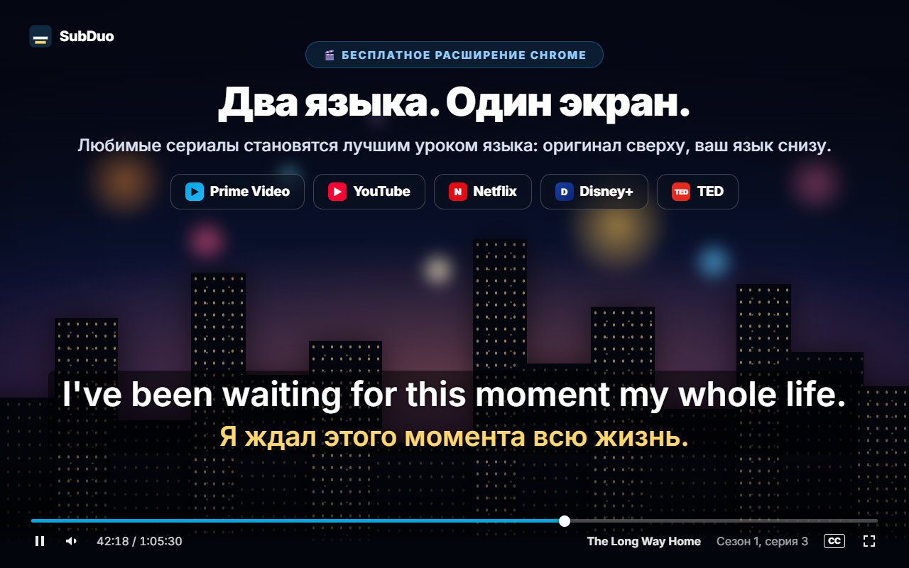
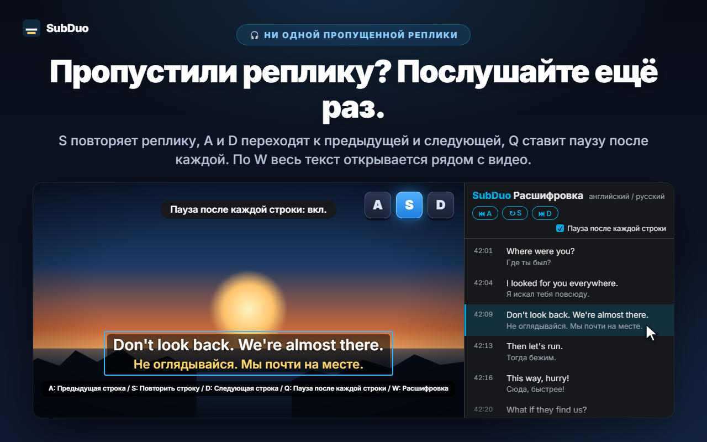
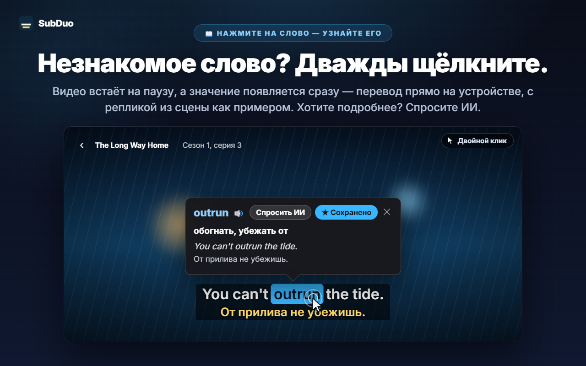
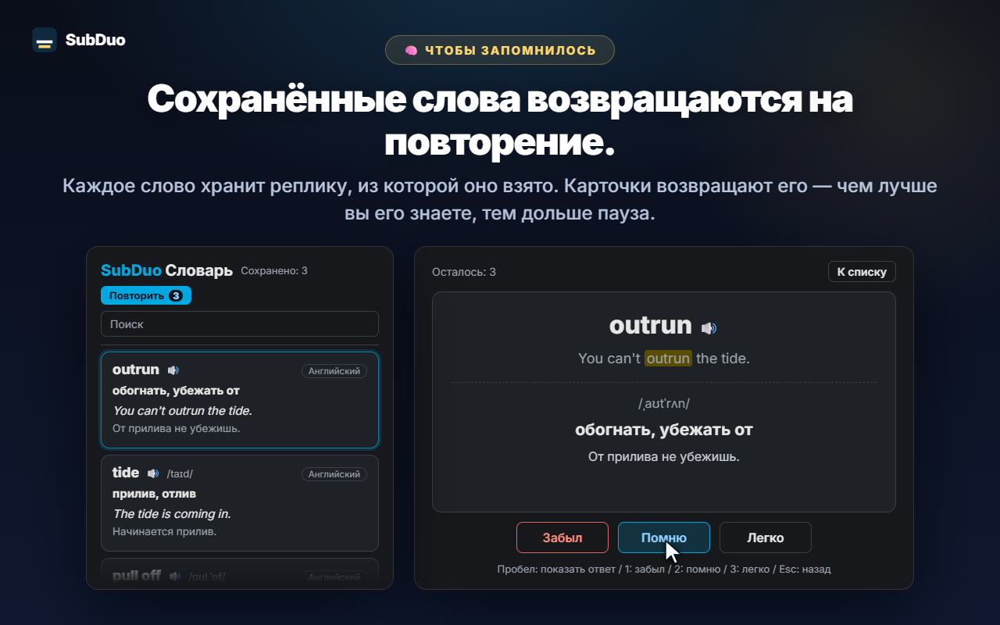

Любые два языка субтитров
Все дорожки, которые даёт сайт, определяются при воспроизведении, включая автоматические субтитры YouTube. Выберите язык для каждой строки или скройте одну из них.
SubDuo показывает субтитры сразу на двух языках: оригинал сверху, ваш язык снизу. Дважды щёлкните по слову, чтобы узнать значение, повторите реплику одной клавишей и сохраняйте новые слова во встроенный словарь.
Использует субтитры, которые уже есть на сайте · Без аккаунта · Субтитры остаются в вашем браузере
Плееры стриминговых сервисов показывают субтитры только на одном языке. SubDuo добавляет второй — и инструменты, чтобы на нём учиться.
Экраны расширения — на вашем языке.

Выберите любые две дорожки субтитров из тех, что есть у фильма: оригинал сверху, ваш язык снизу. Перетащите субтитры куда угодно, покрутите колесо над строкой, чтобы изменить её размер, а правым щелчком настройте цвет, прозрачность или размытие.

S повторяет строку, A и D переходят к предыдущей и следующей, Q включает паузу после каждой строки. W открывает расшифровку на боковой панели Chrome — оба языка, строка за строкой, — а щелчок по любой строке переносит к этому моменту.

Видео встаёт на паузу, и карточка сразу показывает значение — его переводит встроенный переводчик Chrome прямо на вашем устройстве, а примером служит реплика из сцены. Alt+перетаскивание выделяет фразу. Нажмите «Спросить ИИ», чтобы получить значение в контексте, произношение и пример предложения.

Каждое сохранённое слово хранит реплику, из которой оно взято. Ищите и фильтруйте слова в словаре, слушайте произношение и повторяйте по карточкам: чем лучше вы знаете слово, тем позже оно вернётся.
Ни аккаунта, ни экранов настройки. Установите и включайте видео.
Установите SubDuo из Интернет-магазина Chrome и включите видео на Prime Video, YouTube, Netflix, Disney+ или TED.
Нажмите значок SubDuo и выберите язык субтитров для верхней строки и для нижней. В списке только те дорожки, которые есть у фильма.
Дважды щёлкайте по словам, чтобы узнать значение, нажимайте A, S или D, чтобы переслушать реплики, а словарь открывайте из всплывающего окна.
Для тех, кто учится за просмотром — и хочет, чтобы субтитры не мешали, пока не понадобятся.
Все дорожки, которые даёт сайт, определяются при воспроизведении, включая автоматические субтитры YouTube. Выберите язык для каждой строки или скройте одну из них.
Дважды щёлкните по слову или кликните по нему с Alt, а фразу выделите через Alt+перетаскивание. Воспроизведение встаёт на паузу, а перевод, сделанный на вашем устройстве, появляется на видео.
Значение в контексте, произношение и пример предложения — на выбранном языке интерфейса. До 20 объяснений в день бесплатно.
Сохраняйте слова одним кликом, ищите их, фильтруйте по языку и слушайте произношение 🔊. Карточки показывают уже знакомые слова всё реже.
A — предыдущая строка, S — повтор, D — следующая. Q ставит паузу после каждой строки. Размойте одну строку, чтобы проверить себя, и наведите на неё указатель, чтобы свериться.
Все реплики на двух языках рядом с видео. Текущая строка подсвечена; щёлкните по любой, чтобы перейти к ней. Открывается клавишей W.
Перетаскивание — переместить, колесо — размер строки, стрелки — точная подстройка, выравнивание слева, по центру или справа. Правый щелчок — цвет, прозрачность и размытие для каждой строки.
Крупные субтитры на YouTube, неброские на Netflix: настройки сохраняются для каждого сайта отдельно и синхронизируются через ваш Chrome.
Меню, переводы и объяснения ИИ выводятся на выбранном языке интерфейса — он может отличаться от языка Chrome.
SubDuo читает файлы субтитров, которые сайт и так передаёт в ваш браузер, и отрисовывает их там же. Наружу уходит только фраза, о которой вы решили спросить ИИ, вместе с её строкой субтитров.
Субтитры разбираются и отрисовываются в браузере. Настройки, словарь и история просмотра не передаются разработчику. Слова переводит встроенный переводчик Chrome на вашем устройстве.
Когда вы нажимаете «Спросить ИИ», выбранная фраза, её строка субтитров и другая строка на экране, коды языков и случайный идентификатор устройства (для дневного лимита) отправляются на сервер SubDuo, который запрашивает объяснение у OpenAI. Для работы сервиса обрабатывается ваш IP-адрес.
Регистрироваться не нужно. В расширении нет ни рекламы, ни аналитики.
«storage» для настроек и словаря, «scripting» для переподключения открытых вкладок после обновлений, «sidePanel» для расшифровки и доступ только к пяти поддерживаемым сайтам.
Установка из Интернет-магазина Chrome за пару секунд